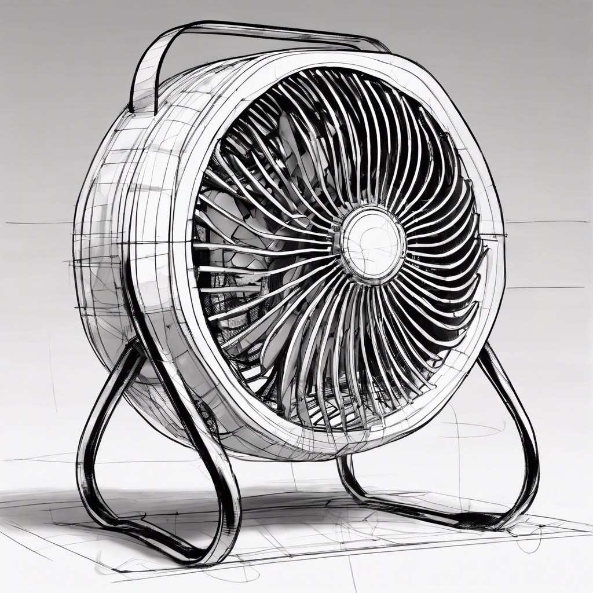

Project
Collapsible Solar BBQ
Group mechanical systems project for a portable solar BBQ with reflector support geometry, hot plate support, safety, portability, CAD, and documentation.
Collapsible solar BBQ concept shown with report and presentation figures plus downloadable design and drawing PDFs.
